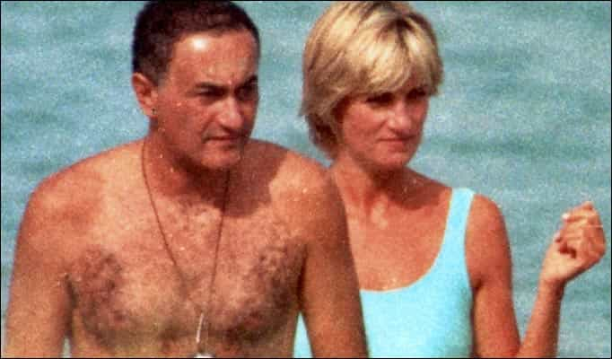
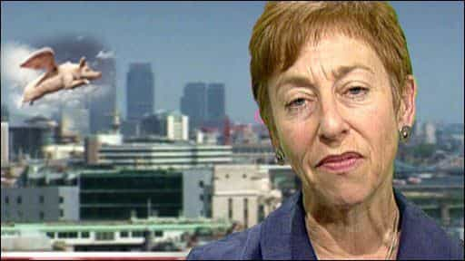

< < < Back
British Rotherham Investigator Gets Obscence Payoff For Doing Nothing, Then Plays The Victim Card – Return Of Kings
Sue Berelowitz, glorified pen-pusher employed by the UK Government to construct a report on widespread child sexual abuse in Rotherham and other English boroughs, has recently received an obscene amount of money for having achieved nothing to help the plight of young children raped and trafficked by Pakistani muslim gangs.
The bureaucrat, who will walk away with £134,000 in and continue in her old job as a “consultant” for £960 a day on a part-time basis, has also pleaded for sympathy after receiving anti-Semitic abuse on the internet. The price of a bit of a racist trolling seems a cheap one to pay for a figure that represents the archetype of the high-ranking British government employee: insular, out of touch with reality, and more concerned with enforcing a politically correct, cultural Marxist view of reality than with carrying out the functions they are paid to do.
Introduction
Any apparent pattern you have noticed is entirely the product of your own racism.
Rotherham, a former industrial town in the north of England, was the site of a national scandal concerning the widespread sexual abuse of children. The perpetrators of the abuse, which included abduction, rape and trafficking, were lumped under the general term of “Asian,” a politically correct British euphemism mainly used to denote Pakistani Muslims. Pakistani Muslim men, in other words, abused white English females on a widespread scale, with conservative estimates putting the number of victims at 1,400 between 1997 and 2003.
The abject failure of local government and police led to handle the problem of abuse in Rotherham led to an inquiry, which accused authorities of effectively ignoring the goings-on. Home Secretary Theresa May condemned the “institutionalised political correctness” of Rotherham’s local government, who turned a blind eye to the curious coincidence that every abuser was a Pakistani muslim in order not to be perceived as “racist.”
Rotherham Metropolitan Borough Council was effectively taken over by central government early this year, after its entire leadership resigned following another expert report which declared it ‘not fit for purpose’.
The National Crime Agency was also called in after the same report said the council “goes to some lengths to cover up information.” The report, by Whitehall mandarin Louise Casey, sets out how council top brass bullied staff who dared to point out that the abusers were ‘predominantly’ Pakistani.
Met the new boss, same as the old boss
Nationalists have capitalised on the discontent in Rotherham, to the consternation of the Left.
Although the old council at Rotherham was supposedly flushed of Cultural Marxists, the new regime continues in the same vein of arrogance. Police and council leaders are to apply to the Home Office to apply for permission to ban protests against child abuse.
The pretext of the application to the Home Secretary to grant powers to ban the marches under provisions of the Public Order Act are clothed in a convenient fig leaf: the protests are organised by “right-wing groups” like the EDL, Britain First, and Yorkshire Infidels.
The attack on freedom of association in Rotherham, however, is an expression of panic by an elite which has been caught with its pants down, wallowing in Cultural Marxist reverie as they sit in glass cubicle offices masturbating over piecharts proclaiming the success of “multiculturalism” and “diversity,” as across the road gangs of so-called Asian men, unrestrained by the reactionary notion of absolute morality, molest underage girls.
Having given the hoo polloi a scrap from the table in the form of two inquiries and a spate of resignations, the expectation was that the plebiscite shut up and wind its neck in. Since that was not the case, and nationalists in Rotherham are taking advantage of public discontent with a Labour party apparatus, local bureaucrats are reaching for the ban-hammer.
Justice must be seen to be done
The Diana Inquest: some say a stitch-up on behalf of the Royal Family
Inquests like that into the death of Diana or the dead Tottenham gangster Mark Duggan are designed to explain away a death at the hands of the state in suspicious circumstances. Great pomp and circumstance attends them, and families call all manner of wacky experts to engage in conspiracy theory to prove an alleged conspiracy by the state.
Inquiries like the two Rotherham inquiries, one carried out by Professor Alexis Jay, an expert into social work, into the Rotherham abuse, and one by Louise Casey, a Whitehall mandarin, into the specific failings of the Council itself, are effective insofar as they may precipitate a raft of other government reactions, like sackings, prosecutions, and structural reforms.
Inquiries can, unfortunately, be made subject to endless delays by special interests who seek to keep uncomfortable truths covered up. The Hutton Inquiry into the death of Dr. David Kelly is at the most more egregious example. The weapons expert who put in doubt Tony Blair’s “dodgy dossier” (which was the foundation for the pretext to invading Iraq in 2003) predicted his own murder and ended up dead in the woods in a highly dubious “suicide.” Lord Hutton, the judge presiding over the inquiry, sealed its report for 70 years!
Committees are usually toothless, noise-making affairs where attention-seekers such as Keith Vaz and Margaret Hodge head their own respective committees which variously excoriate public figures and companies accused of misconduct or other immorality. The impotence of the charade was exposed when a convoy of international corporations passed through Hodge’s Public Accounts Committee to tell her, matter-of-factly, how little tax they’d paid on bumper UK profits. Amazon UK revealed it paid £2.4m tax in 2014, despite £4bn sales.
A lot of bluster from Hodge and a limp stirring from the Guardian has so far resulted in sweet Fanny Adams in the way of tax takings from Amazon.
A nest-feathering bureaucrat with a burning with concern for abused children

It is against this background of theatric impotence in the conduct of so-called public inquiries before the Great British public that one should understand the appearance of pompous characters like Sue Berelowitz. It is not only for this reason of perception-management that Berelowitz, was brought in as England’s Deputy Children’s Commissioner who headed a broader inquiry into child abuse by the Office of the Children’s Commissioner in 2011.
Berelowitz’ activities serve an ideological purpose in promoting and upholding the integrity of the holy, Cultural Marxist narrative. In her organisation’s report, Berelowitz put her name to a churn of bombastic, aspirational left-wing sound-bites, including firm demands for that keynote Cultural Marxist policy, that of sex education for children, put in the following terms:
Relationships and sex education must be provided by trained practitioners in every educational setting for all children and young people. This must be part of a holistic/whole-school approach to child protection that includes internet safety and all forms of bullying and harassment and the getting and giving of consent.
Berelowitz also made sure the right feminist talking points were thrown in: it was men, rather than men from certain cultures, as in Rotherham, who were to blame:
We live in a highly sexualised world in which for the most part it is considered quite acceptable [for men] to do as they want with females, and too many females think that is something they must comply with because they think it is a part of growing up
The report was also at pains to scold the police for “worrying prejudices” they had displayed when in narrowing their inquiries to “Asian men.” Those “worrying prejudices,” according to the analysis of Berelowitz and her fellow experts, were more worrying than the phenomenon of “Asian” gangs of child rapists. Berelowitz effectively precluded any attempt to investigate the possibility that “Asian” Muslim men were involved in large scale sexual abuse, which historian David Starkey had described as “entrenched in foothills of the Punjab,” by issuing an injunction to the effect that there was “nothing to see here.”
All aboard the gravy train
Berelowitz made headlines this year when she took voluntary redundancy from her £99,333-a-year post and was handed a lump sump pay-off of £134,000.
The beleaguered Commissioner was soon hired again as a consultant to her old employer, giving there the same role—leading an inquiry into child abuse—only now earning £960 a day to work up to nine days a month, effectively the same job as before with hugely reduced work hours.
Good work if you can get it.
Acceptable in all major stores
To top it all off, Berelowitz has complained in the Jewish press that she has begun receiving anti-Semitic abuse, claiming that the police is now having to patrol to protect her since she has started receiving “vile” insults on social media.
Attending the Hay Festival, a yearly retreat for assorted left wing intellectuals, far from the tense, deserted streets of Rotherham, Berelowitz complained:
I am a Jew who is doing work that’s very difficult right now because I’m inquiring into the sexual abuse of children and I’m facing the most vile anti-Semitic attacks on social media – ‘filthy Jewish bitch’.
Not only has Berelowitz bagged a shedload of cash for achieving nothing in places like Rotherham (besides keeping the spotlight off the real perpetrators of abuse), but she also has got off lightly if the backlash is limited to a few abusive texts on the internet.
Conclusion
Sue Berelowitz is a personality not far from the rotten core of a British intellectual elite, so beholden to an abstract idea of right and reason that they will actively close their eyes to the truth. Berelowitz helped, as did the entire establishment left, to poo-poo the idea that perhaps there was a problem with so-called Asian men in Rotherham and other places, and that the solution should be tailored accordingly.
Instead she waxed lyrical about action having to be taken, whilst taking no action herself beyond penning some fuzzy words in a useless report which did nothing more than provide fodder for the next echelon of suits-on-the-make wanting to look competent at a press conference.
After gaining massive reward for her rank incompetence, she engaged wrangled a cosy sinecure as “consultant” to the same useless inquiry she had just left. And, as a cherry on the icing, she complains to the national media that anti-Semitic elements of the British right are fingering her as a malevolent element in one of the greatest institutional failures of child protection in the modern era.
The solipsistic conceit is so thick you could cut it with a knife. Every word of every report on Rotherham and its aftermath, as far as solutions are concerned, could have been condensed down to a sentence: “Get rid of all factions that subscribe to political correctness and let the police do their job unfettered by considerations of Cultural Marxist values.”
Read More: We Are Nothing More Than Distracted Sheep In The Real Game Of Power


{kind=link}
{kind=link}
{kind=link}
{kind=link}
{kind=link}
{kind=link}